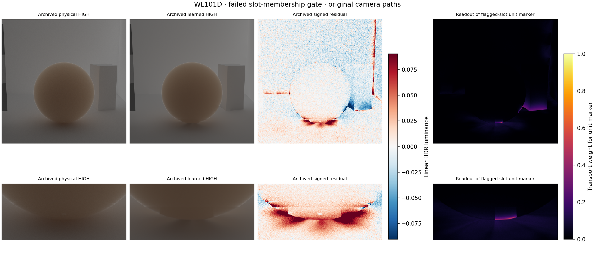
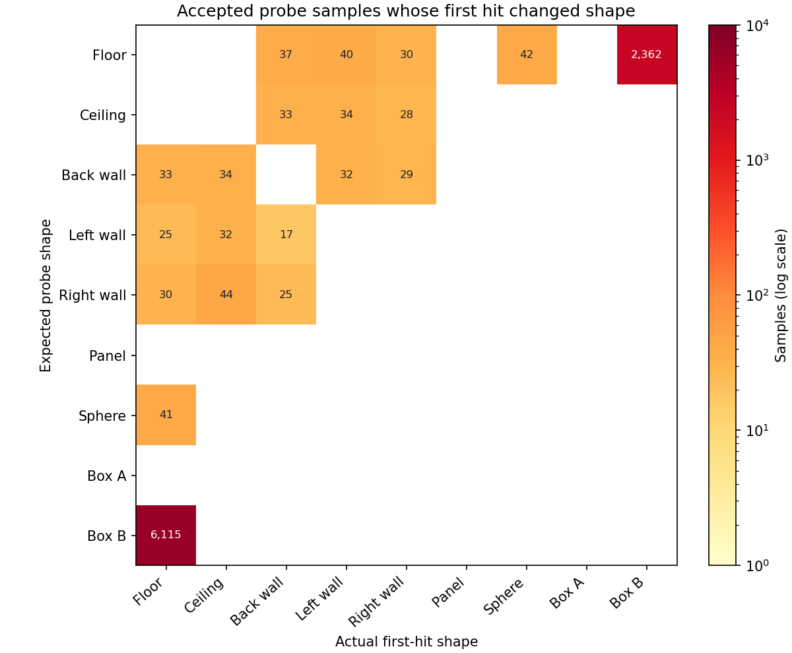

INCONCLUSIVE. The WL100 probe admitted first hits from a different patch/bin under the requested table address. The original camera uses marked slots in all 1,318 near-floor pixels on both matched 4,096-spp streams. The physical Oracle substitution stopped at admission.
Audit metrics · Run and file hashes · Worklog

